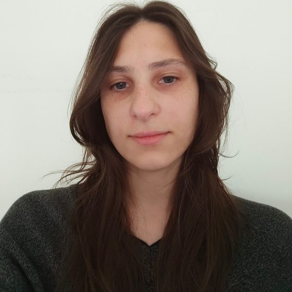

What I've made
Projects
UX/UI · Web and mobile
Apps and websites designed around the people who use them.

Thesis · Augmented reality app
MoleculAR
Point the camera at a handwritten formula and the molecule appears in 3D.
View case →
Web redesign · 2021
Revista Anfibia
A real publication, with fewer clicks to reach each story.
View case →
Landing page · 2024
Nutri Recetas
A cooking brand invented from scratch, designed to convert.
View case →Games and interactive work
What I designed and programmed in Unity and p5.js.


Step by step
How I work
- 01
Research
Benchmarks, user personas and understanding what's hard for the people who will use the product.
- 02
Organize
Information architecture and flows: what comes first and how you get there.
- 03
Prototype
Wireframes and prototypes in Figma, to test before building.
- 04
Build
I develop it myself, so the design reaches the final product intact.

Who I am
About me
I'm in the final stage of a Bachelor's in Multimedia Design at the Faculty of Arts (UNLP), writing my thesis on augmented reality applied to education. I'm interested in user-centered interaction design, and I also make video games. I'm looking for my first role in UX/UI design.
UX/UI
Figma · Prototyping · Benchmarking · User personas · Information architecture
Video games
Unity · Gameplay programming
Graphic and audiovisual
Photoshop · Affinity · Premiere Pro
Get in touch
Let's talk
La Plata, Buenos Aires, Argentina